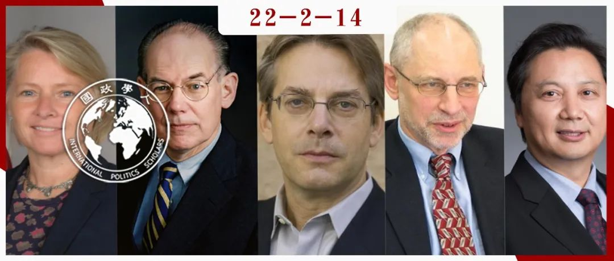

收录于合集

来源简介 ****
辩论者： 约翰·伊肯伯里（John Ikenberry）、黎安友（Andrew Nathan）、董云裳（Susan Thornton）、孙哲（Sun Zhe） VS. 约翰· 米尔斯海默（John Mearsheimer）
编译： 曾庆鸣（国政学人编译员，南开大学周恩来政府管理学院硕士生）
来源： G. John Ikenberry; Andrew J. Nathan; Susan Thornton; Sun Zhe; and John J. Mearsheimer (2022), “A Rival of America’s Making? The Debate Over Washington’s China Strategy,” Foreign Affairs.

董云裳 / 米尔斯海默 / 伊肯伯里 / 黎安友 / 孙哲
导 读
本文选自《外交事务》2022年3/4月刊最新刊登的辩论文章。约翰·伊肯伯里、黎安友、董云裳和孙哲四位学者从不同角度针对米尔斯海默去年11月发于《外交事务》上“中美不可避免的竞争”一文进行了猛烈批驳。最后米尔斯海默针对每位学者批评质疑进行一一“回怼”。本文题名为“中国是美国亲自缔造的对手？美国对华政策大辩论”。在针锋相对的理论和政策辩论之外，五位学者似乎不一而同地接受了“是美国一手成就了今日强大的中国”这一预设立场。“农夫与蛇”的叙事使美国政学界倾向于认为曾经的施惠方美国毫无根据地受到受惠方中国的挑战。中美之间，是否像他们所言，是开恩者与受恩者之间的关系？本次辩论囊括了几个具有代表性的评判美国对华战略成败的观点，由国政学人编译整理，内容观点不代表本平台立场。
约翰·伊肯伯里观点
约翰·伊肯伯里（G. John Ikenberry）
自由国际主义思想代表人物、自由主义国际秩序学者、普林斯顿大学政治学系教授，代表作《自由主义利维坦》、《大战胜利之后》 ****
01
自由主义的豪赌
大多数国际事务观察家认同米尔斯海默在去年11月《外交事务》双月刊上发表的“中美不可避免的竞争”（“The Inevitable Rivalry”）一文中论证的观点：自由主义押在中国上的豪赌未能成功。冷战后美国将中国接纳进世界经济，并未使其成为更加开放、自由化且更具责任的全球秩序利益攸关方（responsible stakeholder），反而使其变得愈发强势。 米尔斯海默更进一步地指出， 美国对华接触战略是美国外交政策最严重的灾难之一，一开始采取遏制战略本可成功阻止或迟滞中国这一威胁的出现。
米尔斯海默忽视了这一战略带来的收益远大于成本，且美国对华政策只是冷战后寻求加强美国主导的自由国际秩序基础措施的一角。 美国具有建立国际秩序的悠久传统，在此基础上，美国推动并牵引着国际体系朝着与其利益和价值观大体一致的方向发展。通过制定国际规则和制度促进自由民主制，扩大与欧洲及东亚盟国的安全合作，建立国际联合阵线应对人类面临的最严重威胁。
一旦中国开始崛起，放弃这一对华战略将使美国在防范中国方面陷入更加险恶的境地。 在米尔斯海默设想的世界里，美国在全球范围内会面临不利局面，盟友和伙伴会变得更少。同样，米尔斯海默设想的美国将会面对更加充满敌意且对全球秩序不满的中国，使得全球秩序愈发动荡且前景黯淡，更不可能朝向解决二十一世纪问题所需的全球合作方向发展。
02
自由主义国际秩序的大捷
苏联解体后，美国主导的自由主义国际秩序面临的最大威胁随之消散，各国欣然无比地加入“自由世界”行列。民主国家在世界各国所占比例从八十年代的30%翻番至二十一世纪头十年的60%，北约和欧盟不断扩大，区域自由贸易协定激增，1995年还成立了世贸组织。美国执掌着一个不断扩大的全球体系，创造了比以往任何时代都更多的财富、安全和社会正义。这一全球体系是自由主义的豪赌，也是自由主义在世界范围内取得的历史性成功。 美国显然希望中国成为这个不断扩大的全球秩序中的利益攸关方，但这绝不是主要目的。更重要的目标是建立由美国及其盟国支配的，以自由主义为导向的国际秩序。
米尔斯海默版现实主义作为对抗中国的指导，根本无法厘清、解释并意识到上述成就。 冷战结束之际，米尔斯海默与其他主流现实主义者认为以美国为首的联盟体系将会瓦解。1990年米尔斯海默在《大西洋观察》（ The Atlantic ）杂志上提到，“苏联的威胁提供了将北约团结在一起的粘合剂…而美国可能会放弃欧洲大陆，其领导了四十年的防御联盟很可能会解体，结束过去四十五年来维持欧洲和平的两极秩序。” 与米尔斯海默所述截然不同的情况在欧洲和东亚发生了：虽然苏联威胁消失了，但美国同盟体系得以存续，自由民主国家之间更加团结紧密了。
冷战结束三十年后，包括米尔斯海默在内的许多现实主义者再次对美国的联盟体系提出质疑，并打着“离岸平衡”（offshore balancing）的旗号，主张美国减弱对世界范围内安全的涉足。他们认为美国应专注于保卫西半球，在保护欧洲和东亚盟友时发挥更加节制的后备作用。然而美国的战略收缩肯定会鼓动“修正主义国家”扩大影响力范围填补真空，预示着世界将回到那个我们曾经熟知的、悲剧逻辑的帝国主义世界。
03
接触加遏制（Congagement）
米尔斯海默也没有意识到美国对华战略从始至终不单单是接触。 冷战未结束时中国就已经是联合国安理会和许多地区及全球制度的成员国了，中国已经身在国际秩序其中了，同时冷战后美国历届政府确实也试图将中国纳入全球秩序。但美国的对华战略还有另外两个组成部分：
首先，美国通过充满活力且深度强化的东亚联盟体系来制衡中国。 克林顿政府时期重新调整美日同盟，1996、1997年接连出台了《美日联合安全宣言》和新版《美日防卫合作新指针》，对美日同盟进行了再定义并将《美日安全保障条约》作为区域稳定性力量，这一举措无疑是冷战后美国外交政策的重大成就之一。1995年在五角大楼任职的政治学家约瑟夫·奈指出了“中国力量的崛起”并申明美国在东亚采取“深入接触”战略的理由，体现了克林顿政府的思想。美国并未特别明显地表露出冷战后继续留在东亚地区，或通过部队前沿部署继续在东亚地区提供安全保障的姿态，但事实证明深度接触至今仍是美国战略的核心。
第二是加强泛亚太区域制度的管理。 美国跳出了东亚地理的传统边界，放眼与澳大利亚、印度、环太平洋美洲展开区域合作以加强亚太地区的安全和经济架构。这一举措背后的理念设想亚太更广泛的区域保持开放，更少地被中国所主导。九十年代许多观察家（可能包括许多中国人）将美国对华政策称为接触和遏制的混合体“接触加遏制”也就不足为奇了。
美国对华战略的主要失败在于，允许中国在没有满足特定条件之前让其融入自由主义资本体系。 冷战期间的自由主义秩序是一种“俱乐部式”的互助社会，成员接受自由民主的原则以换取西方主导的贸易和安全体系的入场券。冷战结束后，这样一种加入自由主义秩序的“条件性”逻辑（logic of conditionality）被打破了，自由主义秩序变得更像是一个“购物中心”，各国可以在其中任意挑选并索取秩序的某些有利方面。中国加入并受益于自由主义秩序的某些部分（例如有利的贸易条件）而忽略了去满足其他部分条件。米尔斯海默也写道：“美国领导人本应谈成一项对中国施加更加严厉条款的双边贸易协定。” 维持获得国际秩序入场券的条件性需要强大而统一的自由主义秩序，而非米尔斯海默设想的充满分裂和国家间竞争的现实主义世界。
米尔斯海默认为， 美国除了在贸易方面对中国提出更多要求外，还应追求更加严苛的，系统性限制中国经济成长及实力增长的后冷战大战略。在米尔斯海默的反事实历史推理中， 美国本应该寻求一直让中国保持弱势、贫穷和边缘化的地位。 但有理由怀疑米尔斯海默的替代性方案是否可取，是否可能。
一方面，美国公众不太可能支持这种“一把扼住中国国运咽喉” （putting a boot on China’s throat） 的大战略。 大多数美国人在政治上反感并在道德上怀疑这种战略。中国到底构成了多么重大的威胁才要使美国采取如此非自由主义的现实政治做法？冷战后现实主义者不认为中国将成为未来与美国平起平坐的对等竞争者（peer competition）。例如1992 年美国国防部长迪克·切尼（Dick Cheney）的顾问撰写并透露给媒体一份典型的现实主义报告，认为美国在新时代的使命是确保在欧洲或亚洲不出现作为潜在超级大国的竞争者。但这份报告认为潜在超级大国竞争者和未来美国领导地位的潜在挑战者可能是德国和日本，而非中国。
米尔斯海默运用反事实推理（counterfactual）的问题不止于此： 全面遏制中国需要愿意合作的盟友和伙伴，然而其他国家仔细考量后会得出中国未对它们构成同等程度威胁的结论。 美国政府本身也不可能维持长达数十年的遏制战略，走这样一条路需要政治阶层、商界和外交政策精英之间的团结统一，充其量是一种空想。米尔斯海默长期以来对自由民主国家清醒地追求其长期国家利益的能力深表疑虑。然而在他所写的文章中，他却认为这样一种谨慎而连贯的遏制大战略不仅是可能的，而且可以持续几代人。
米尔斯海默的战略一旦以某种方式实施了，无疑将是一种国家自残行为 （national self-harm） 。对华遏制将使美国及其伙伴更加分裂，自由主义国际秩序更加混乱。 美国会在经济上输给其他从对华贸易中受益的国家，同时美国作为全球领导者的声誉会无法挽回地被削弱。最终，该战略也无法阻止中国的崛起，中国只会从美国失败的遏制尝试中变得更加强大、更加不满，并且更加脱离自由国际主义的原则和规范。在米尔斯海默反事实推理的世界中，美国与中国的合作将比现在更少，而目前恰恰应对全球变暖、卫生疾病、网络战争和核扩散等一系列全球性威胁需要更多合作的时刻。
中国对美国构成了巨大挑战，米尔斯海默这一观点是正确的。 两国彼此是竞争对手，对世界秩序抱有相互对立、截然相反的愿景。 美国想要一个更加和平的民主世界，因为两个多世纪以来美国相信在以自由民主国家占主导的世界里，能够更加安全。然而中国想要一个对于其自身而非对于美国而言更加安全的世界，因此两国蕴含着巨大的战略摩擦。面对这一挑战， 美国最好与其盟友合作，加强能够使其自身更加安全的自由民主和全球体系，同时寻找与其主要竞争对手合作的机会。
黎安友观点
黎安友（Andrew J. Nathan）
美国汉学家、哥伦比亚大学政治学教授、东亚研究所主任，代表作《寻找安全感的中国》、《长城与空城计》 ****
01
正确地看待“中国威胁”
约翰·米尔斯海默从各方面评估中国对美国利益构成的威胁是正确的。 亚洲敌对阵营之间缺乏明确的地理分界线使得相比于比冷战时期，战争更加“近在咫尺”。米尔斯海默在文章中表示，随着势力均衡发生变化，“中国的行为与现实主义理论所预测的完全一样……谁又能责怪中国寻求主导亚洲并成为地球上最强大的国家？”
02
权力的来源
就地理位置而言，中国与许多互不信任彼此的邻国接壤。这些邻国没有一个在文化或意识形态上完全倒向中国。 这些邻国出于战略或经济原因在不同时间、或在不同程度上与中国合作，通常通过提升与美国的关系寻求对冲潜在的中国区域主导权。 这种制衡行为越来越明显：印度为了参加与澳大利亚、日本和美国的联合军事演习而牺牲了其传统的战略自主权，这是美日印澳四国机制（QUAD）的一部分；日本采取了史无前例的步骤，正式宣布台海稳定符合日本国家利益；澳大利亚通过2021年 AUKUS 协议获得核动力潜艇的帮助并重新强调了澳美联盟。
地理位置有助于解释中国缺乏盟友的弱点。 缺乏盟友与其说是一种资产，不如说是一种负担： 缺乏盟友不仅剥夺了对不合作邻国施加压力的方法，也剥夺了在世界各地部署大规模军事力量的能力。 美国60多个盟友和伙伴中没有一个与美国的利益完全一致，也无人指望这些盟友和伙伴遵从美国对华战略的方方面面。但美国的联盟和伙伴关系体系仍然能使中国战略考量复杂化，增加了中国遵从他国偏好及国际准则的压力。
国际权力的结构性分布也不利于中国获取全球主导性地位。除非其他国家出现灾难性的管理不善，否则 中国将在多极体系中长期面对五个强大的竞争对手——印度、日本、俄罗斯、美国和欧盟。中美任意一方都无法再造这样一种“单极时刻”。
03
威胁感知（threat perception）
毫不夸张地说，美国面临非常严重的“中国挑战”。正如现实主义理论预测的那样，中国对现状不满且被美国盟友、伙伴及其军队团团包围。 中国希望将美国势力推出其海岸并削弱其联盟，这意味着中美爆发冲突的真正潜在风险（尤其是在台湾问题上） 。我同意米尔斯海默的观点 ：如果爆发战争，可能是一场具有高度破坏性的有限战争，但也不排除两国发生核战争、甚至相互摧毁的风险。
但米尔斯海默将中国维护国家统一的决心描述为“情绪化的”或“扩张主义的”是错误的，因为这种描述使中国看起来具有非理性的侵略性。 鉴于其主权主张的长期法律基础以及台湾地区对中国安全的战略、经济和技术重要性，米尔斯海默自己的现实主义理论其实更好地解释了为什么中国大陆不会对台湾地区失去兴趣这一问题。 同样符合现实主义理论的是，中国倾向于避免过早统一，在实现和平统一之前阻止台湾地区独立。 但威慑台湾地区意味着中国必须建立能够威胁美国长期以来依赖航空母舰、前沿空军和海军基地阻止大陆武力统一企图的军事资产，而这一举措的结果将引向中美军备竞赛并增加由误判爆发战争的风险。
米尔斯海默将中国的目标描述为旨在获取全球主导地位，这一点是错误的。 在多极化世界中，就像其他大国一样， 中国将寻求塑造有利于自己的全球制度，但没有提议建立一套由中国主导的替代性制度。 中国仍然坚定地致力于全球自由贸易制度，以及联合国和该组织的机构，积极地参与联合国人权体系。“一带一路”倡议与长期存在的西方发展援助项目并驾齐驱，并未寻求取代西方发展项目。中国虽然寻求国际影响力，但只要其他大国仍在全球制度中扮演活跃角色就几乎无法取得主导地位。
高估中国的威胁与低估一样危险。通过在美国公众和对华政策制定者中制造恐慌，炒作中国威胁的危害使中美关系更难管理。 无论对华接触是否是米尔斯海默所声称的错误，无论是否存在他认为的限制中国成长的选项，美国仍在原地踏步（we are where we are）。
董云裳观点
董云裳（Susan A. Thornton）
美国前高级外交官、耶鲁大学蔡中曾中国研究中心高级研究员、东亚事务专家 ****
01
战争爆发的限制因素
米尔斯海默的这篇文章给人一种不祥的，难逃厄运的预感（a sense of foreboding and doom）。米尔斯海默提到，“对华接触可能是美国近代史中犯下最严重的战略失误”，作为结果“中美陷入了只能称之为新冷战的局面….而这场冷战更有可能升温。”
我不同意美国对中国的接触政策是重大战略失误这一说法。 冷战期间对华接触政策成功地说服了中国不再输出意识形态和革命，并使其转而帮助美国对抗苏联。 冷战结束后，对华接触政策使中国实现了巨大的经济增长，使数亿中国人摆脱了贫困，这算是一项重大的人类成就。 如果一系列失策导致中美之间爆发军事冲突，这才是真正的战略失误。 米尔斯海默认为结构性因素无情地导致了中美军事冲突。但他这种现实主义观点无视了当代国际关系的现实。
当代有许多强有力的限制措施维持和平， 美国几十年来也一直在努力搭建预防战争爆发的堡垒。过去70年间，这些堡垒维护了和平并促进了繁荣，而且 这些堡垒仍然强大到足以防止中美冲突。 以下几个极不可能发生的情况同时出现并且所有约束同时失效时，中美之间才有可能爆发军事冲突：
首先，冲突前中美双边外交将必然崩溃。 接触与疏远相反，疏远描述了1949年至1972年间中美正式关系的缺失。接触的目的是防止误解、提供保证及防止冲突。诚然，过去五年中美外交和交流一直乏善可陈，滋生了中美关系的混乱和过度反应。但这并非结构性的，是可以得到补救的。如果两国高层领导人始终如一地进行沟通并努力克制表现公开对抗的姿态，那么外交渠道防止战争爆发的作用将得到增强。
第二，如果中美爆发战争，国际体系必然已经失败。 中美与全球各国及国际制度网络紧密相连，各国及国际制度在防止中美冲突方面拥有生死攸关的利害关系，因此会试图通过外交压力、调解等措施来防止迫在眉睫的冲突。当局者迷，旁观者清，当前国际体系中任何一方都无法通过战争取胜，中美之外的国家最清楚这一点。
第三是是全球化造成的限制。 米尔斯海默认为美国帮助中国致富是一个灾难性的错误，因为由中国致富所产生的中国力量将不可避免地促使其挑战美国。但也有理由认为以中国和美国经济不可分割一体化为特性的全球经济使得任何战争都无法取胜，从而对冲突爆发具有威慑作用。 经济依赖确实未能阻止第一次世界大战的爆发，但20世纪初的经济关系与当今国际经济体系的复杂纠葛完全不同。
最后一个限制因素是公众舆论，美国政客不能忽视选民的情绪。 在与恐怖主义进行了长达二十年的斗争之后，美国国内公众对卷入旷日持久且代价高昂的海外冲突十分警惕。
以上这些限制因素都能起到防止冲突爆发的作用，但还有一道保险能够防止中美冲突，那就是军事威慑。 正如人类进入核时代这一步伐阻止了冷战四十年间美苏爆发直接冲突一样，中美都是具有二次打击能力的武装力量的有核国家，因此不会爆发直接冲突，相互保证摧毁的原则仍然有效，核时代的恐怖平衡仍然存在。
孙哲观点
孙哲（Sun Zhe）
美国哥伦比亚大学中国项目联席主任，北京大学国家治理协同创新中心高级研究员，代表作《左右未来：美国国会的制度转型和决策行为》
01
寻找一种战略
在约翰·米尔斯海默看来，中国一心一意地想要超越美国，因此两个大国之间的冲突几乎是不可避免的。目前中国国内对中美关系有多种看法：一种看法是，由于国内制约，中美两国不可避免地会走向分裂和脱钩。第二种看法是美国一心寻求遏制中国并削弱中国的国家力量，因此中国不可能向美国妥协，与美国合作也徒劳无用。还有一种观点强调中美两国互动的相互对抗性质，认为中国必须准备打一场决定性的战争。这些观点反映了一种零和思维，透露出悲观和敌对的感觉。米尔斯海默认为这种零和思维主导着中国的对外政策。
米尔斯海默在他的文章中花了很大篇幅批评接触政策这一本就有着浓厚和平主义底色思想的词汇。米尔斯海默可称其为“冒险政策”，但冒险是值得的并且已经取得了回报。 接触政策使中国取得了非凡的现代化成就， 减少了贫穷人口的数量并产生了日益庞大、国际化且开明的中产阶级。 中产阶级压倒性地珍视自由和财产权等价值观，同时在在外交政策上更偏好和平与谈判。 虽然中产阶级集团没有权力指导中国的未来，但却不能完全忽视它。
米尔斯海默将中国视为注定要与美国开打的战争机器：一旦给战争集器插上发条，它就将大步迈向权力扩张。米尔斯海默认为中国的实力增长、民族主义以及缺乏盟友限制将导致其试图改变外部现状。然而 中国历来强调国家主权和外交谈判，称中国为维持现状的守成大国更为准确。相比之下，美国才是真正的修正主义者： 美国试图向阿富汗和伊拉克等国输出民主；同样在亚洲美国建立了QUAD、AUKUS等一系列双多边盟友机制围堵中国。 米尔斯海默将中国视作只想挑战美国的区域霸权是错误的。 相反，中国将自己视为国际霸凌的受害者，并且作为一个正在崛起但尚未完全崛起的大国，中国从未放弃在当前国际体系中与美国共存并且合作的希望。
米尔斯海默开出的处方和他给出的诊断都是错误的。 米尔斯海默认为由于美中竞争的根源是“结构性的”，“这个问题不能通过巧妙的决策来解决”。然后他提出了两条建议：第一条建议是“在东亚保持强大的常规军事力量以吓阻中国，传递武装冲突只能带来代价高昂的胜利这一信号”，这条建议假设美国可以阻止中国发动战争；第二条建议是“努力为开展安全竞争制定明确的规则和路径，例如避免海上突发事件或其他意外军事冲突的协议，”这条建议假设中国具有足够的理性遵循明确的行为准则。如果米尔斯海默确信以上政策是摆脱中美竞争的最佳途径，那么他本质上是在争辩，只要中美双方有明智的领导层并能做出理性的决策就可以避免最坏的结果。因此与米尔斯海默在文中所声称的相反，国际结构本身并不能决定国际体系的未来，施动者同样也很重要。
米尔斯海默回应
米尔斯海默（John J. Mearsheimer）
进攻性现实主义代表人物、美国著名国际关系理论家、芝加哥大学温德尔·哈里森杰出政治学教授，代表作为《大国政治的悲剧》 ****
01
回应伊肯伯里
很高兴看到伊肯伯里承认了对华接触已经陷入了万丈深渊（failed abysmally）这一观点。用他的话来说，中美现在是对世界秩序抱有截然相反愿景的霸权竞争对手。由于无法为美国的对华接触辩护，他转而关注美国决策者在所谓的“单极时刻”所奉行的自由主义霸权政策。 伊肯伯里奇怪地坚称自由主义霸权政策“是世界范围内历史性的成功”。
事实并不支持伊肯伯里的说法。与 1990 年相比，虽然当时美国是地球上唯一的超级大国，然而今天美国却面临着中俄这两个充满敌意和危险的大国。 伊肯伯里几十年来一直倡导的自由主义国际秩序已经支离破碎： 美国在中东地区的所有政策造成了巨大的死伤和破坏，并面临最终失败。冷战后正在向前进的民主现在也正在面临倒退。更糟糕的是美国民主正受到围攻，部分归咎于自由主义霸权的过度扩张和失败。伊肯伯里认为美国“在一个自由民主占主导地位的世界里更安全”。但 他长期支持的自由主义政策破坏了国内外的民主，并且按照他的逻辑，这种自由主义霸权政策终将使美国变得更不安全。
伊肯伯里错误地叙述了我关于对华遏制的看法，把我描绘成更希望美国寻求“使中国保持软弱、贫穷和边缘化地位”的人。这是一个不切实际的目标，中国是注定要经济增长的，我从未提过上述观点。 我实际上主张的是，华盛顿应该设法迟滞中国的成长，不仅要推迟它成为大国的那一天，还要确保它永远不会成为对等竞争者。 美国外交政策制定机构迷恋于对华接触，没有时间进行现实主义的争论。 然而我相信，如果美国领导人致力于现实主义，他们本可以制定有效的对华遏制政策从而在国内外获得大量支持。
伊肯伯里声称我认为美国作为“离岸平衡”的倡导者对盟友没有什么用处，并认为“美国应该专注于保卫西半球，同时在保护欧洲和东亚的盟友方面发挥更节制有限的后备作用。” 我从来没有提出过这样的论点。相反我一直认为美国对抗中国别无选择，必须与盟国密切合作以遏制中国的崛起，包括采取行动保卫台湾地区。
02
回应黎安友——中国想要什么
黎安友不太关心对华接触议题，而是关注中美战略竞争的演变。他担心我在“炒作”中国威胁并“制造恐慌”。他虽然没有明着说中国是纸老虎，但倾向于以那样的思维思考。 具体而言，黎安友认为中国“存在重大弱点”，不会成为地区霸主，更不会成为世界上最强大的国家。
我从未说过中国实际上将主宰亚洲或获得全球霸主地位。相反 我认为随着中国变得更加强大，它将试图努力实现这些目标。作为回应，美国及其盟国将竭尽全力遏制中国， 就像曾经美国对德意志帝国、日本帝国、纳粹德国和苏联那样。
然后黎安友声称“中国存在重大弱点”，这将严重阻碍其主导亚洲的努力。中国确实面临一些挑战，但黎安友夸大了它们。他声称中国在多极世界中运作，面临着“五个强大的竞争对手”。但欧盟不是一个国家，印度和日本不是大国，俄罗斯也不是中国的竞争对手。 美国是中国唯一的大国竞争对手。 当然，中国将不得不与包括印度和日本在内的以美国为首的制衡联盟抗衡，但这与同时面对五个有能力阻止其实现地区霸权的大国相去甚远。 对中国更加有利的是，印度、日本和美国相距千里，这将削弱它们共同遏制中国的能力。此外，中国并不像黎安友描绘的那样冷漠无情，没有伙伴。中国与巴基斯坦和俄罗斯这两个邻国建立了日益友好的关系。
03
回应董云裳和孙哲——战争爆发的机率
董云裳不同意我将冷战后的对华接触归类为“严重的战略错误”，认为该政策“使数亿中国人摆脱了贫困”，这是“一项重大的人类成就”。但 这一成就与美国的安全无关，这是摆在桌面上的问题。董云裳从来没有解释为什么从美国的角度来看，对华接触这项加速缔造一个自己竞争者的政策不是一项战略失误。
董云裳坚定认为“为了维持和平，有许多强有利的限制战争措施”。相比之下 我认为这种竞争正在“不可避免地导致一场引向世界末日的战争”。但我并没有说战争是不可避免的，我承认中美爆发武装冲突存在巨大限制因素， 然而正如逻辑和历史所表明的那样，这些战争阻碍措施并非坚不可摧。
和董云裳一样，孙哲歪曲了我的论点，声称我认为中国“注定要发动战争”，使中美战争“几乎不可避免”。事实上 我坚持认为中美安全竞争是不可避免的，然而中美战争不是不可避免的， 孙哲也引用我写的“可以通过避免战争来管理这种竞争”这句话。
在孙哲看来，中国是“一个维持现状的守成大国”，美国正朝着强调合作而非冲突的对华政策迈进。孙哲还强调，虽然很多中国人对美中关系的未来持悲观态度，但也有很多人持乐观态度，希望改善中美关系。在美国也是如此，然而 归根结底这些辩论还是会被国际体系无政府状态固有的竞争压力所掩盖了，每个国家最终都必须自助。这些压力将促使中国寻求亚洲“霸权”。
审校 | 施榕（北京大学国际关系学院博士生）
排版 | 牛子悦 邱意雯
文章观点不代表本平台观点，本平台评译分享的文章均出于专业学习之用, 不以任何盈利为目的，内容主要呈现对原文的介绍，原文内容请通过各高校购买的数据库自行下载。

国政学人
支持学术公益与知识传播
微信扫一扫赞赏作者 __赞赏
已喜欢，对作者说句悄悄话
取消 __
发送给作者
发送
最多40字，当前共字
上一页 1/3 下一页
长按二维码向我转账
支持学术公益与知识传播
受苹果公司新规定影响，微信 iOS 版的赞赏功能被关闭，可通过二维码转账支持公众号。